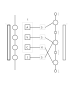
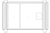
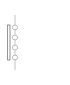
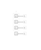
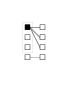
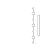
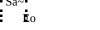
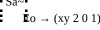

nbcli meta-instrument
This notebook outlines the specifications of nbcli, a meta-instrument for live coding and archimusic composition.

Table of Contents
What is a meta-instrument?
An instrument is a device defined by the way it is used (e.g. musical instrument to make music). Meta means self-referential or denoting a change in something. Moreover, the prefix meta- means pertaining to a second or higher-order. The research behind nbcli is grounded in computer music and algorithmic composition (composing music with algorithmic patterns), as such the meta aspect of nbcli explores precomposition (the setup and pre-arrangement of composition material and systems). With live coding practice as a vehicle, the nbcli meta-instrument makes pre-composition a performative element of the practice.
The concept of meta-instrument also refers to the ability for nbcli itself to create new instruments. The methodology used in its creation, was captured and synthesized into a workflow, that nbcli can re-initiate to create new modules (the compositional elements and systems that makeup the instruments' capabilities), further extending its use.
Meta-notation
The model of the nbcli meta-instrument as an abstract machine can be broken down into 3 main parts:
- MOS (machinic observation system) represented by the letter S in the diagram below, refers to the instruments' sampling and input system, such as audio, video, and general signal sources of data made available to the instrument. It is where field recordings and video capture happen.
- TRANS (transformation system) represented by the dotted areas in the diagram below, refers to the instruments' ability to transform sampled and generated data and information. It is where composition arrangement and live coding happens.
- MES (machinic expression system) represented by the letter E in the diagram below, refers to the instruments' expression and output system, in the form of sonic, visual or raw data outputs. This is where music is heard and visuals seen.

These 3 parts being the makeup of the abstract machine, can be referred to as proto-machines: the technical layers of an abstract machine.
The MOS (S) layer can be further broken down into its proto-machinic view as follows:

The rectangular item in the MES proto-machine is the probe, responsible for capturing incoming data. The 4 circles are known as abstract buffers for temporal storage of input media from the probe or generated data from a ugen. A ugen (unit generator) refers to the system used to generate raw audio or visual data.
The TRANS (-formation) system can be further broken down into its proto-machinic view as follows:

TRANS is a proto-machine for facilitating the preparation of composing sessions, live performance setups, research and prototyping experiments, art installation configurations, music compositions, audiovisual compositions, and generative compositions. It is represented by the four logic buffers A, V, C, and I, referred to by the acronym AVCI (pronounced a-vee-chi). Referring to audio, video, control voltage, and image, they are “logic” buffers signifying their identity beyond being buffers for storing a particular media type, but suggests that they can be used for parameterization or general purpose.
The second column consists of a transformation buffer for every type of AVCI: sonic (So), spatial (Sp), and kinetic (Ki), where both V and I of AVCI share the same transformation buffer (Sp). These transform buffers are the final result of the TRANS proto-machine and continue on to the expressor (MES below). Like the AVCI buffers, the transformation buffers are logic buffers and contain much more information than simply the media in question.

The diagram above shows paths from each logic buffer to all possibilities for transform buffers.
The MES (E) can be further broken down into its proto-machinic view as follows:

The MES proto-machine is the output of nbcli which can range from an arrangement of instruments and/or (pre)compositions to new instruments, music, shaders or data sets from textures to raw audio. The proto-machine of the MES creates expressivity, described by dimension, modularity, morphogenesis, and perception.
What the notation looks like
Let’s take a simple setup scenario of a live microphone receiving audio input (Sa~) and used in a composition setup with a synthesizer. The composer uses a combination of captured sounds from the microphone and transforms them with a series of parameters set by the synthesizer (A → So), and generates a custom musical output heard through studio speakers (Eo). An nbcli meta-notation of this setup could look like this:
Sa~ | A → So| Eo
The notation can also be sketched liked this:

Expressivity (e)
The final part to the nbcli meta-notation refers to the instruments' expressive power, a characteristic defined in the form of an equation:
The expressivity equation is primarily based on an interpretation of Magnusson's ergodynamics of instruments with particular focus on characteristics of importance to nbcli and this research including HCI influences from analogue modular synthesizers, digital music instruments, live coding esolangs, algorithmic music composition tools from various time periods.
Expressivity (e) is the function of nbcli (f) over time (t). The functions of nbcli are to operate in a defined dimensional space (dimxyz), use one or more modules which define its modularity (modn), if the instrument is capable of transformation or not, as a way to identify morphogenesis potential (morphbool), and if perception potential is positive or negative (perc±1).
Dimensional space is written as xy for a two-dimensional space and xyz for a three-dimensional space. Frequency over time and pitch over time in the digital audio domain is a two-dimensional sonic space, just as an image texture is a two-dimensional visual space. In these examples, the dimensional space of expressivity is written xy. Geometric shape primitives such as spheres and cubes are three-dimensional, as well spatial audio from a quad speaker setup in architectural space. In these examples, the dimensional space of expressivity is written xyz.
As witnessed by the instrumentality of the modular synthesizer, the stacking of modules expands the affordances of the instrument, increasing numbers of voices, filters and controls, further increasing its capabilities. In this equation, modularity of nbcli refers to the number of sigv modules and nbcli extensions used in a composition or performance and reflects this through the affordances they create. The n subscript signifies modularity is indicated by an integer of the amount of modules and/or extensions used.
Morphogenesis is the study of origin and development of morphological characteristics (Oxford Dictionary). In this research, the morph (or morphological capability) is the instruments’ ability to create and facilitate transformations via precomposition and composition. The instruments’ modularity contributes directly to the morphological capability due to that capability mostly comes from the existence of a module that provides this.
perc describes the range of perception. With the visual, positive 1 indicates visible, and negative 1 invisible. In the audio domain, perc assigns positive 1 to audible waveforms (20 Hz - 20 kHz) and negative 1 to low-frequency waveforms (e.g. LFO and control voltage in modular synthesis).
Meta-notation w/Expressivity
From our previous example of the notation, we can now add expressivity:
Sa~ | A → So| Eo → (xy 2 0 1)
Notation sketch:

The expressivity element → (xy 2 0 1) can be read as composition in a two-dimensional space (xy) using two modules (2), has no morphogenetic capability (0), and is audible (1).
Command Atlas
Init
The first step in initializing nbcli is launching a terminal session. This session once launched will have a configuration set by an invisible file named .sigvsh. This prepares the terminal to receive and respond to all nbcli commands. That would put our command atlas in a state that looks like this:
What nbcli init assumes
In part, the creation of sigv is a direct response to the research problem exploring a series of experiments in transmodality, built with the Max programming environment. From this perspective, sigv is one of a myriad of tools that generate both visual on sonic material using the powerful backing of technologies such as Max engines. Live coding practice however often challenges the behaviors of popular computing paradigms as well as bringing to the fore, the question of magnitude of computational expense. The management of cognitive load, creative thinking, computing power, and language, often require the inclusion of computational expense consideration. nbcli init assumes that live coding should start from scratch, from a blank canvas, and therefore also from a perspective of minimal resources to begin with.
In the above diagram for nbcli init, available to the live coder is a small list of commands for utilities such as repetitive functions, counters and timers, for loops and aliases, many of which are aliases for sigv commands. There are also other “assumed” tools the live coder might have on their machines including SuperCollider and its sclang CLI, Orca’s CLI version and a formatted alias to a directory for Orca files (omods).
Prior to launching sigv explicitly (by writing sigv on the command line to launch it), nbcli allows for a dressing up of the scenario a performer seeks to create, with or without the use of sigv. A live coder could use nbcli to initiate Orca CLI and sclang and immediately live code music.
Language
Understanding the language of nbcli is a complex interplay between existing paradigms.
nbcli consists of a mini-language called sigv, which is also the name of the tool developed in Max, and a group of custom Bash scripts. With the Bash script,s nbcli is also considered a connection to all accessible programs and operations on the live coders’ machine, accessbile via the command line. In my case, this includes SuperCollider via sclang, OpenFrameworks via ofx, Orca CLI via orcac, nano and TMUX, example utiltities that simply exist with the use of the Terminal. Like Bash scripts written in the Terminal, nbcli commands can also be amended while using them.
When using sigv, nbcli facilitates a bridging of the Bash programming paradigm with that of the Max programming language.
Ki Kinetic
We begin to look specifically at sigv commands by starting with the above image. In lavender and white boxes at the top for the bash commands, and the yellow for sigv kinetic commands. Together, these commands form a signalling system of sorts using Open Sound Control (OSC), connecting sigv modules together using Max messaging, and for the loading and unloading of modules.
When describing the meta-notation, we referred to transform buffers under the TRANS proto-machine. These buffers are called transform one based on the simple fact that the abstract machines’ primary duty is to create transforms, that are then “expressed” in some way. As a contingent of this duty, the sigv modules are split amongst these transforms, giving them a particular “state” of focus. So in terms of the commands used to carry out these duties, we refer to the spatial, sonic and kinetic as “solid states."
The kinetic commands are connectors (like tilde), messaging systems (like osc), general purpose operators (like new and zap), and generative systems (markov).
Sp Spatial
In our spatial diagram above are blue commands referring to visual primitives, generative systems, shader objects, algorithms, effects, and spaces. Limited to only a few nbcli bash commands shown that interact with sigv spatial commands. The darker blue commands represent visual primitives that operate in the xyz dimension. The light blue commands with dark text are the extended spaces of the wrld module.
A signature structure of visual primitives include an anim parameter, for translations and scaling.
So Sonic
The sonic commands for sigv include an experimental synth (synth), a granular synthesizer (grain), a MIDI and VST module (midi), a sampler module (spk) and others. The key module/command for audio is the engine itself: aio. In order for sound to work, the aio module needs to be present.
o-sigv
The o-sigv operators below (aka the nbcli 9) are nine operators grouped into target activities set for live coding visuals, sound, and physical computing within the Orca live coding environment. To view them all on one page of tables: o-sigv table.
ANIM
MAT
TRANS
AUDIO
LIGHTS
SYSTEM
SERIAL
CHAO
BUFFER
Blueberry Framework
The Blueberry Framework is a custom setup for portable live coding with small computers that was first tested as a Raspberry Pi. The premise was to support art installations, generative composition systems, and portable live coding performance setups. The main purpose of this exploration was to achieve the goal of extending live coding to the built environment through the live coding of GPIO pins on these small computers.
The listed advantages of Orca in this research that led to o-sigv for desktop version, is also present in Orca norns. Furthermore, the norns sound computers' creator Monome, has released a norns shield, a DIY version of their flagship hardware made with the Raspberry Pi. In many, but different ways, the norns device has similar ideas to the Blueberry Pi concept.
o-sigv on norns allows for the mobile sound computer to be a remote "controller" for any computer running sigv and connected to a display and speakers.
Ecosystem
The following diagram depicts the placements of parts in the nbcli ecosystem:

Modes
Modular